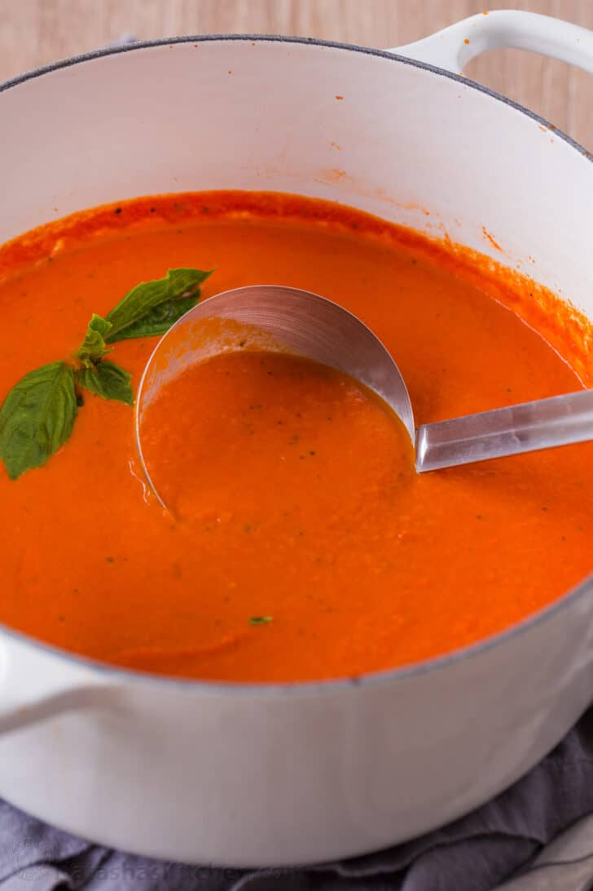

Tomato Soup

Recipie Video
Description
This easy tomato soup recipe makes one of the best bowls of soup I’ve made. It’s shockingly simple and calls for only three main ingredients (butter, onion, and tomatoes). Don’t let the short ingredient list fool you, this soup is absolutely delicious!
Ingredients
- Butter – use unsalted butter to sautee onions
- Yellow onion
- Garlic – you’ll need 1 Tbsp minced from about 3 cloves
- Crushed tomatoes – with their juice, preferably San Marzano tomatoes
- Chicken stock
- Basil – chop and add 1/4 cup fresh basil, plus more to serve. Basil leaves are easily bruised so chop by stacking a bunch of leaves then roll them into a log and cut into thin strips.
- Sugar – It’s just 1 Tbsp
- Black pepper – start with 1/2 tsp and add more to taste
- Whipping cream
- Parmesan cheese
Steps
- Saute Aromatics – heat a non-reactive pot over medium heat. Melt in 4 Tbsp butter then sautee onions until softened and golden (10-12 min). Add minced garlic and saute another minute.
- Make the tomato soup base – stir in two 28 oz cans of crushed tomatoes with their juice, your chicken stock, chopped basil, sugar and black pepper. Bring to a boil then reduce heat, partially cover and simmer 10 minutes.
- Blend if desired – use an immersion blender in the pot or blend in batches using a blender (be careful not to overfill the blender with hot liquid) and return soup to the pot.
- Add cream and parmesan – stir in the heavy cream and shredded parmesan. Return to a simmer and season to taste if needed.
- Serve – ladle into warm bowls and garnish with more parmesan and basil.
Main Page